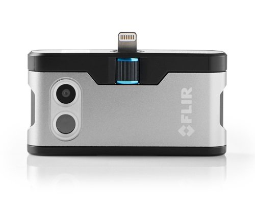
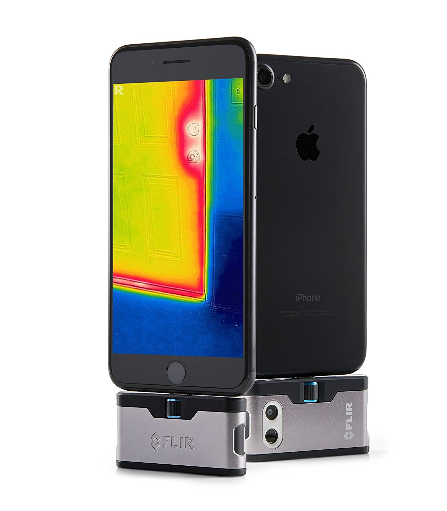
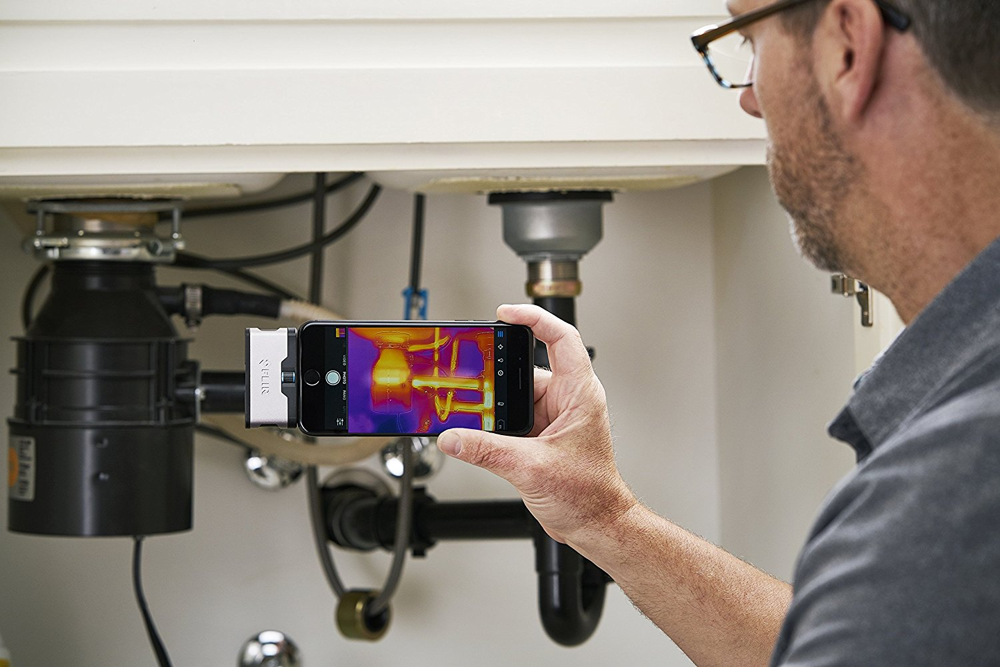

|
Model: 435-0004-02
- Powerful thermal imaging camera gives you the power to see in total darkness, find problems around
the house, and explore your world in a whole new way
- FLIR ONE app is free to download from the App Store and features exclusive content, real-time
tips and tricks, and easy sharing of thermal images and videos on social media
- FLIR ONE allows you to see and measure temperature differences accurately and from a safe distance
- Exclusive MSX technology blends thermal and visible spectrum for more detail and enhanced resolution
because two cameras are better than one
- One Fit adjustable connector allows for use with compatible protective cases. Thermal sensor:
Pixel size 17μm, 8 - 14μm spectral range
|